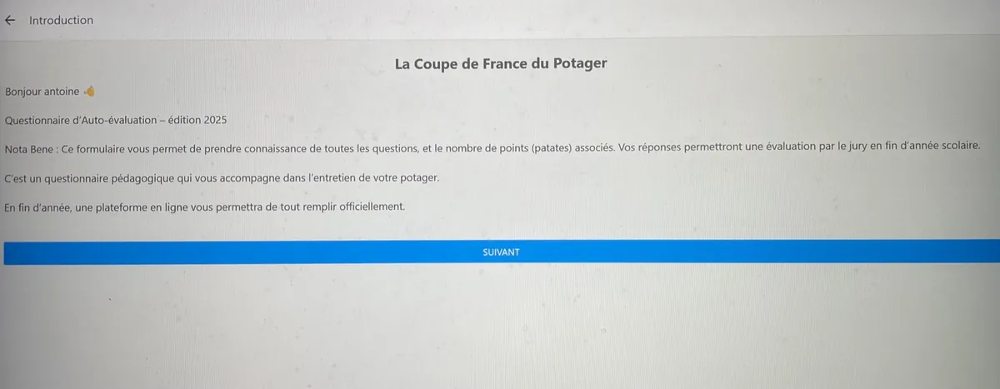

Développement d’un outil numérique pour Landestini
Landestini est une association et un fonds de dotation engagés pour l’écologie, l’alimentation durable, et la biodiversité, notamment autour du potager.
Ils organisent plusieurs compétitions éducatives et écologiques :
- La Coupe du Monde du Potager 🌍
- La Coupe de France du Potager 🇫🇷
- Des coupes régionales (ex : Hauts-de-France)
J’ai conçu un outil numérique unique, accessible à la fois sur mobile et web, destiné à accompagner la Coupe de France du Potager.
Ce système propose un questionnaire d’auto-évaluation complet permettant aux participants d’évaluer leurs pratiques avant le passage du jury.
Développé en React Native pour l’application mobile et en Express.js / SQLite pour l’interface web, ce projet a nécessité une réflexion complète sur l’accessibilité, l’ergonomie et la synchronisation entre les supports.
Conception & dessin d’interface
J’ai cadré l’expérience en partant de maquettes basse fidélité (papier) puis d’écrans simples reprenant une grille régulière, de gros zones tactiles et des libellés explicites. Les décisions clés : barre de progression 1/14, validations immédiates près des champs, boutons d’action visibles, et messages d’erreur clairs.
- Authentification : formulaires lisibles (e‑mail, mot de passe), retours d’état et redirection propre.
- Questionnaire : pages courtes, aide contextuelle, téléversement compressé des photos.
- Administration : liste consolidée (filtres, tri, recherche), détail d’équipe avec pièces jointes.